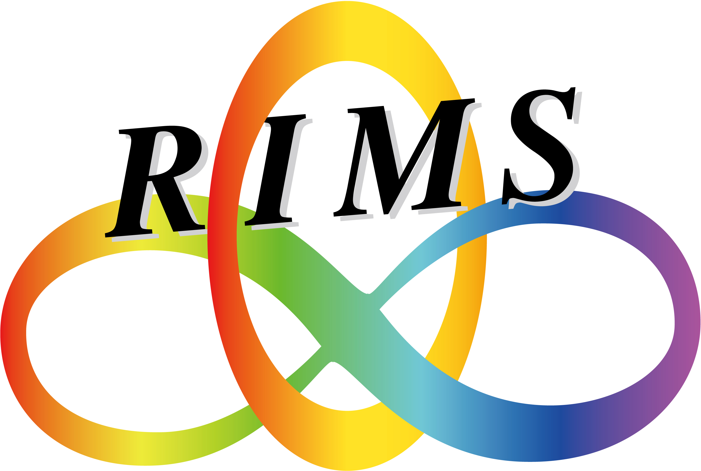

Note: Registration is mandatory for participation. The application form will be available soon.
(Capacity is limited. A selection process will be conducted if applications exceed the limit.)The main objective of this learn-by-doing workshop is to understand recent work by Koymans and Pagano [KP25] on elliptic curves of rank one over number fields. We will also learn about the key new ingredient: an additive combinatorics result concerning simultaneous prime values of degree 1 polynomials. Furthermore, we will explore how these techniques help extend the negative solution of Hilbert's 10th Problem to other coefficient rings.
[KP25] Peter Koymans and Carlo Pagano, “Elliptic curves of rank one over number fields”, 2025. https://arxiv.org/abs/2505.16910
The lectures are divided into three groups:
・Elliptic lectures will cover the work of Koymans and Pagano [KP25] assuming the additive combinatorics result as a black box.
・Additive lectures will follow the proof of the additive combinatorics result [K23] stating that finitely many degree 1 polynomials with coefficients in algebraic integers can attain simultaneous prime values in certain circumstances.
・Hilbert's Tenth Problem lectures will have a quick look at the theoretical framework to treat decidability problems, how elliptic curves fit into this picture, and how the above techniques were applied [KP24].
From Naha Airport (airport code: OKA), take the monorail to Asato station, and then the venue is a 7-minute walk.
This workshop will be held within the framework of the RIMS Satellite Seminar series, and is supported by funding from RIMS.
This workshop is also supported by JSPS KAKENHI Grants:
